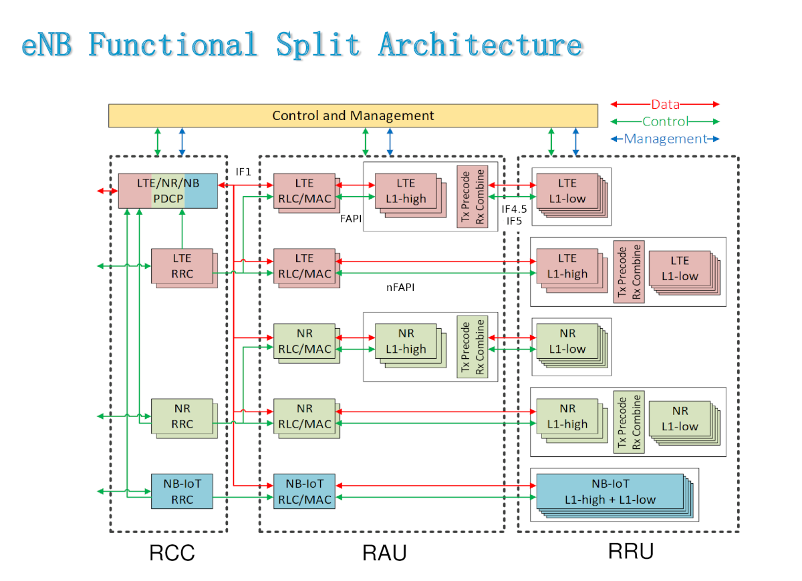
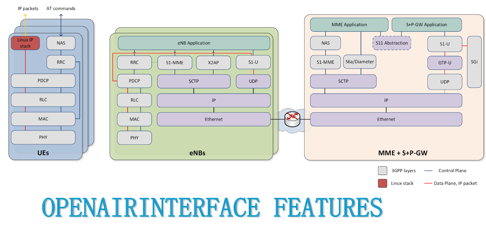

Feature Set¶
Functional Split Architecture¶
- RCC: Radio-Cloud Center
- RAU: Radio-Access Unit
- RRU: Remote Radio-Unit
- IF4.5 / IF5 : similar to IEEE P1914.1
- FAPI (IF2) : specified by Small Cell Forum (open-nFAPI implementation)
- IF1 : F1 in 3GPP Release 15

OpenAirInterface Block Diagram¶

OpenAirInterface 5G-NR Feature Set¶
General Parameters¶
The following features are valid for the gNB and the 5G-NR UE.
- Static TDD
- Multi TDD pattern supported refer TDD Configuration
- Static FDD
- Normal CP
- Subcarrier spacings: 15 and 30kHz (FR1), 120kHz (FR2)
- Bandwidths: 5-100MHz (FR1), 100 and 200MHz (FR2)
- Intermediate downlink and uplink frequencies to interface with IF equipment
- Procedures for 4-layer DL and 2-layer UL SU-MIMO
- Slot format: 14 OFDM symbols in UL or DL
- Highly efficient 3GPP compliant LDPC encoder and decoder (BG1 and BG2 supported)
- Highly efficient 3GPP compliant polar encoder and decoder
- Encoder and decoder for short blocks
- Support for UL transform precoding (SC-FDMA)
- LDPC offload (see LDPC offload setup):
- Intel ACCs, Amd/Xilinx T2 via O-RAN AAL/DPDK BBDEV
- NVIDIA GPUs via CUDA, AMD GPUs via HIP
- OpenRadioSystems Aurora (decoding only)
These modes of operation are supported:
- "phy-test" mode (gNB, nrUE):
- gNB and nrUE have hardcoded RNTI and radio configuration
- gNB schedules the nrUE all the time, even if no UE connected
- can be used for performance evaluation
- "noS1" mode (DL and UL, gNB, nrUE):
- Connection setup stops after RA; RRC configuration is exchanged through files
- Creates TUN interface to SDAP to inject and receive user-place traffic
- No connection to the core network
- Standalone (SA) mode (gNB, nrUE):
- UE can register with the 5G Core Network through the gNB, establish a PDU Session and exchange user-plane traffic
- Reestablishment supported
- Non-standalone (NSA) mode (gNB):
- UE can use the gNB for user plane traffic while connected to the 4G eNB
- is unstable (only one UE connection)
gNB PHY¶
- 15kHz and 30kHz SCS for FR1 and 120kHz SCS for FR2
- Generation of NR-PSS/NR-SSS
- NR-PBCH supports multiple SSBs and flexible periodicity
- Generation of NR-PDCCH (including generation of DCI, polar encoding, scrambling, modulation, RB mapping, etc)
- common search space
- user-specific search space
- DCI formats: 00, 10, 01 and 11
- Generation of NR-PDSCH (including Segmentation, LDPC encoding, rate matching, scrambling, modulation, RB mapping, etc).
- PDSCH mapping type A and B
- DMRS configuration type 1 and 2
- Single and multiple DMRS symbols
- PTRS support
- Support for up to 4 TX antennas
- Support for up to 4 layers
- Support for 256 QAM
- NR-CSIRS Generation of sequence at PHY
- NR-PUSCH (including Segmentation, LDPC encoding, rate matching, scrambling, modulation, RB mapping, etc).
- PUSCH mapping type A and B
- DMRS configuration type 1 and 2
- Single and multiple DMRS symbols
- PTRS support
- Support for up to 4 RX antennas
- Support for up to 2 layers
- Support for 256 QAM
- NR-PUCCH
- Format 0 (2 bits, for ACK/NACK and SR)
- Format 2 (mainly for CSI feedback, SR)
- NR-SRS - SRS signal reception (periodic and aperiodic) - Channel estimation (with T tracer real time monitoring) - Power noise estimation
- NR-PRS - Rel16 Positioning reference signal(PRS) generation and modulation - Multiple PRS resources, one per beam is supported in FR2 TDD mode - FR1 and FR2 support with config file
- NR-PRACH
- Formats 0,1,2,3, A1-A3, B1-B3
- Highly efficient 3GPP compliant LDPC encoder and decoder (BG1 and BG2 are supported)
- Highly efficient 3GPP compliant polar encoder and decoder
- Encoder and decoder for short block
gNB MAC¶
- MAC -> PHY configuration using NR FAPI P5 interface
- MAC <-> PHY data interface using FAPI P7 interface for DL_TTI.request, UL_TTI.request, UL_DCI.request, TX_data.request, RX_Data.indication, CRC.indication, UCI.indication, SRS.indication
- Generation of and scheduler procedures for MIB/SIB1
- Scheduler procedures for RA - 4-Step RA - Contention Free RA procedure - Contention Based RA procedure - Msg3 can transfer uplink CCCH, DTCH or DCCH messages - CBRA can be performed using MAC CE for C-RNTI - Is not possible to use 2-Step RA and 4-Step RA at the same time - 2-Step RA - Contention Based RA procedure - MsgA can transfer uplink CCCH, DTCH or DCCH messages - CBRA can be performed using MAC CE for C-RNTI - Is not possible to use 2-Step RA and 4-Step RA at the same time - Fallback not supported
- Scheduler procedures for CSI-RS
- MAC downlink scheduler
- phy-test scheduler (fixed allocation and usable also without UE)
- regular scheduler with dynamic proportionally-fair allocation
- MCS adaptation from HARQ BLER or SSB-SINR report
- MAC header generation (including timing advance)
- ACK/NACK handling and HARQ procedures for downlink
- MAC uplink scheduler
- phy-test scheduler (fixed allocation)
- regular scheduler with dynamic proportionally-fair allocation
- HARQ procedures for uplink
- MCS adaption from HARQ BLER or PUSCH SINR
- Scheduler procedures for SRS reception
- Periodic and aperiodic SRS reception
- Channel rank computation up to 2x2 scenario
- TPMI computation based on SRS up 4 antenna ports and 2 layers
- MAC procedures to handle CSI measurement report
- evalution of RSRP report
- evaluation of CQI report
- MAC scheduling of SR reception
- Paging (PCCH/P-RNTI)
- CN paging records queued
- PF/PO dequeue from SIB1 PCCH-Config
- PCCH encoded at the UE's PO
- Type2 common search-space based P-RNTI PDCCH + PDSCH scheduling for PCCH
- Intra-frequency handover
- Inter-frequency handover - Measurement gaps are automatically computed at the DU if the CU has neighbor information and the configured neighbors include cells operating on different frequencies - DUs must be synchronized with each other for the measurements to be properly performed
- NR-DC (see NR-DC)
- Initial support for RedCap
- RedCap SIB1 v17 IEs supported
- Coexistence of RedCap and Normal UEs
- Handling of RedCap capability for small PDCP/RLC SN size
- Scheduling of other SIBs (2, 3, 4, 19)
- NTN
- Support downlinkHARQ-FeedbackDisabled-r17
- Support for 32 PDSCH and PUSCH HARQ processes per UE
- Consider ntn-Config-r17.cellSpecificKoffset-r17 in scheduling
- Function-based interface for ntn-Config-r17 updates (used by NTN-LEO RFsimulator)
gNB RLC¶
- Send/Receive operations according to 38.322 Rel.16
- Segmentation and reassembly procedures
- RLC Acknowledged mode supporting PDU retransmissions
- RLC Unacknowledged mode
- DRBs and SRBs establishment/handling and association with RLC entities
- Timers implementation
- Interfaces with PDCP, MAC
- Interfaces with gtp-u (data Tx/Rx over F1-U at the DU)
gNB PDCP¶
- Send/Receive operations according to 38.323 Rel.16
- Integrity protection and ciphering procedures
- Sequence number management, SDU dicard and in-order delivery
- Radio bearer establishment/handling and association with PDCP entities
- Interfaces with RRC, RLC
- Interfaces with gtp-u (data Tx/Rx over N3 and F1-U interfaces)
gNB SDAP¶
- Send/Receive operations according to 37.324 Rel.15
- Establishment/Handling of SDAP entities.
- Transfer of User Plane Data
- Mapping between a QoS flow and a DRB for both DL and UL
- Multiple QoS flows per DRB, multiple DRBs per PDU session
- Marking QoS flow ID in both DL and UL packets
- Reflective QoS flow to DRB mapping for UL SDAP data PDUs
gNB RRC¶
- NR RRC (38.331) Rel 17 messages using new asn1c
- LTE RRC (36.331) also updated to Rel 15
- Generation of system information (SIB2, SIB3, SIB4)
- RRC can configure PDCP and SDAP (through E1), and RLC and MAC (through F1)
- Interface with GTP-U (tunnel creation/handling for S1-U (NSA), N3 (SA), F1 interfaces)
- Integration of RRC messages and procedures supporting UE 5G SA connection
- RRCSetupRequest/RRCSetup/RRCSetupComplete
- RRC Uplink/Downlink Information transfer carrying NAS messages transparently
- RRC Reconfiguration/Reconfiguration complete
- RRC Reestablishment/Reestablishment complete
- Support for MasterCellGroup configuration (from DU)
- Interface with NGAP for the interactions with the AMF
- Interface with F1AP for CU/DU split deployment option
- Interface with E1AP for CU-CP/CU-CP split deployment option
- Interface with XnAP for the interactions with other gNBs
- Periodic RRC measurements of serving/neighbour cells and A2/A3 event handling
- RRC Mobility Management Procedures:
- Inter-DU Handover (F1-based handover within same CU)
- Inter-gNB Handover (N2-based handover between different gNBs)
- Inter-gNB Handover (Xn-based handover between different gNBs)
- Handover Preparation Information generation and processing
- Handover Command generation and processing
- PDCP Status transfer procedures
- Support for handover decision triggers (A3 events, manual triggers)
- Initial support for RedCap (see MAC)
gNB X2AP¶
- Integration of X2AP messages and procedures for the exchanges with the eNB over X2 interface supporting the NSA setup according to 36.423 Rel. 15
- X2 setup with eNB
- Handling of SgNB Addition Request/Addition Request Acknowledge/Reconfiguration Complete
gNB NGAP¶
- Integration of NGAP messages and procedures for the exchanges with the AMF over N2 interface according to 38.413 Rel. 15
- NGAP Setup request/response
- NGAP Initial UE message
- NGAP Initial context setup request/response
- NGAP Downlink/Uplink NAS transfer
- NGAP Paging
- NGAP UE context release request/command/complete
- NGAP UE radio capability info indication
- NGAP PDU session resource setup request/response
- NGAP PDU session resource modify request/response
- NGAP PDU session resource release command/response
- NGAP PDU session resource notify
- NGAP Mobility Management Procedures:
- NGAP Handover Required
- NGAP Handover Request
- NGAP Handover Request Acknowledge
- NGAP Handover Command
- NGAP Handover Notify
- NGAP Handover Cancel
- NGAP Handover Cancel Acknowledge
- NGAP Uplink RAN Status Transfer
- NGAP Downlink RAN Status Transfer
- NGAP Path Switch Request/Acknowledge
- NGAP NRPPa Transport Procedures:
- Downlink UE Associated NRPPa Transport
- Uplink UE Associated NRPPa Transport
- Downlink Non UE Associated NRPPa Transport
- Uplink Non UE Associated NRPPa Transport
- Interface with RRC
gNB XnAP¶
- Integration of XnAP messages and procedures for the exchanges between gNBs
over the Xn-C interface according to 38.423 Rel. 16
- Xn Interface Management:
- Xn Setup request/response/failure
- Xn Mobility Management Procedures:
- XnAP Handover Request
- XnAP Handover Request Acknowledge
- XnAP Handover Preparation Failure
- XnAP SN Status Transfer
- XnAP UE Context Release
- XnAP Handover Cancel
- Message encoding/decoding (with unit tests) for Xn Handover Success, Xn RAN Paging and Xn Retrieve UE Context request/response/failure
- Xn Interface Management:
- Interface with RRC
- Multiple Xn peers per gNB
- No Xn-U (no data forwarding during handover)
gNB F1AP¶
- Integration of F1AP messages and procedures for the control plane exchanges between the CU and DU entities according to 38.473 Rel. 16
- F1 Interface Management:
- F1 Setup request/response/failure
- F1 RRC Message Transfer:
- F1 Initial UL RRC Message Transfer
- F1 DL RRC Message Transfer
- F1 UL RRC Message Transfer
- F1 UE Context Management:
- F1 UE Context setup request/response
- F1 UE Context modification request/response
- F1 UE Context modification required
- F1 UE Context release req/cmd/complete
- F1 Paging
- F1 gNB CU configuration update
- F1 gNB DU configuration update
- F1 Reset (handled at DU only, full reset only)
- F1 Mobility Management Procedures:
- F1 Intra-CU Handover (Inter-DU mobility)
- F1 Positioning Procedures:
- F1 TRP Information Request/Response
- F1 Positioning Information Request/Response
- F1 Positioning Activation Request/Response
- F1 Positioning Measurement Request/Response
- F1 Interface Management:
- Interface with RRC
- Interface with GTP-u (tunnel creation/handling for F1-U interface)
- One CU(-CP) can handle multiple DUs
- Support for intra-CU mobility (across DUs)
gNB E1AP¶
- Integration of E1AP messages and procedures for exchange between CU-CP and CU-UP according to TS 38.463 Rel. 16
- E1 Setup (gNB-CU-UP initiated) - E1 Setup Request - E1 Setup Response - E1 Setup Failure
- E1 Bearer Context Setup (gNB-CU-CP initiated) - E1 Bearer Context Setup Request - E1 Bearer Context Setup Response - E1 Bearer Context Setup Failure
- Bearer Context Modification (gNB-CU-CP initiated) - E1 Bearer Context Modification Request - E1 Bearer Context Modification Response - E1 Bearer Context Modification Failure
- Bearer Context Modification (gNB-CU-UP initiated) - E1 Bearer Context Modification Required - E1 Bearer Context Modification Confirm
- Bearer Context Release (gNB-CU-CP initiated) - E1 Bearer Context Release Command - E1 Bearer Context Release Complete
- Interface with RRC and PDCP/SDAP
- One CU-CP can handle multiple CU-UPs
gNB NRPPA¶
- Integration of NRPPa (NR Positioning Protocol A) messages and procedures for
location services via the AMF and LMF according to TS 38.455
- TRP Information Exchange:
- TRP Information Request
- TRP Information Response
- TRP Information Failure
- Positioning Information Exchange:
- Positioning Information Request (SRS Configuration)
- Positioning Information Response
- Positioning Activation:
- Positioning Activation Request
- Positioning Activation Response
- Measurement Information Transfer:
- Measurement Request (UL-RTOA measurement)
- Measurement Response
- Measurement Failure
- TRP Information Exchange:
- Support for Uplink Time Difference of Arrival (UL-TDOA) based positioning
- Support for distributed antenna systems, where a single DU manages multiple antennas acting as individual Transmission and Reception Points (TRPs)
- Interface with NGAP and RRC for UE-associated and Non-UE-associated positioning contexts
gNB GTP-U¶
- New GTP-U implementation supporting both N3 and F1-U interfaces according to 29.281 Rel.15
- Interfaces with RRC, F1AP for tunnel creation
- Interfaces with PDCP and RLC for data send/receive at the CU and DU respectively (F1-U interface)
- Interface with SDAP for data send/receive, capture of GTP-U Optional Header, GTP-U Extension Header and PDU Session Container
- GTP Error Indication (TS 29.281)
gNB E2 and E3 agents¶
- O-RAN E2 agent (with FlexRIC)
- E2SM-KPM, E2SM-RC
- O-RAN E3 agent for dApps (opt-in
E3_AGENTbuild option, see E3AP README)- Spectrum sensing and L1-KPM service models
Number of supported UEs¶
- 16 by default (as defined in
MAX_MOBILES_PER_GNB) - up to 100 (
MAX_MOBILES_PER_GNBneeds to be increased)
OpenAirInterface 5G-NR UE Feature Set¶
NR UE PHY Layer¶
- Initial synchronization
- non-blind synchronization (information required: carrier frequency, bandwidth, numerology)
- option to search SSB inside the bandwidth available
- Time tracking based on PBCH DMRS
- Initial Frequency offset estimation based on PSS and SSS
- Continuous Frequency offset estimation and compensation based on PBCH DMRS
- 15kHz and 30kHz SCS for FR1 and 120 kHz SCS for FR2
- Reception of NR-PSS/NR-SSS
- NR-PBCH supports multiple SSBs and flexible periodicity
- RSRP measurement for the strongest SSB
- RSRP measurement for up to 8 neighboring cell at same SSB frequency with serving cell
- Reception of NR-PDCCH (including reception of DCI, polar decoding, de-scrambling, de-modulation, RB de-mapping, etc)
- common search space configured by MIB
- user-specific search space configured by RRC
- DCI formats: 00, 10, 01 and 11
- Reception of NR-PDSCH (including Segmentation, LDPC decoding, rate de-matching, de-scrambling, de-modulation, RB de-mapping, etc).
- PDSCH mapping type A and B
- Downlink resource allocation type 0 and 1
- DMRS configuration type 1 and 2
- Single and multiple DMRS symbols
- PTRS support
- Support for 256 QAM
- Support for 1, 2 and 4 RX antennas
- Support for up to 2 layers (currently limited to DMRS configuration type 2)
- Measurements based on NR-CSIRS
- RSRP measurements
- RI, PMI and CQI computation
- Support for up to 4 RX antennas
- Support for up to 2 layers
- NR-PUSCH (including Segmentation, LDPC encoding, rate matching, scrambling, modulation, RB mapping, etc).
- PUSCH mapping type A and B
- DMRS configuration type 1 and 2
- Single and multiple DMRS symbols
- PTRS support
- Support for 256 QAM
- Support for up to 2 TX antenna
- Support for up to 2 layers
- Support for UCI on PUSCH
- NR-PUCCH
- Format 0 (2 bits for ACK/NACK and SR)
- Format 2 (mainly for CSI feedback)
- Format 1 (limited testing)
- Format 3 and 4 present but old code never tested (need restructuring before verification)
- NR-SRS
- Generation of sequence at PHY
- SRS signal transmission
- NR-PRS
- PRS based Channel estimation with T tracer dumps
- Time of arrival(ToA) estimation based on channel impulse response(CIR)
- Finer ToA estimation by 16x oversampled IDFT for CIR
- Support for multiple gNB reception with gNBs synced via GPSDO
- NR-PRACH
- Formats 0,1,2,3, A1-A3, B1-B3
- NTN
- TA adjustment based on ntn-Config-r17 information
- Different TA adjustment algorithms between SIB19 receptions: - Autonomous TA adjustment based on DL time tracking - Standard compliant epoch time based TA adjustment including orbital propagation
- DL Doppler compensation based on ntn-Config-r17 information
- UL Doppler pre-compensation based on ntn-Config-r17 information and residual DL FO estimation
- Highly efficient 3GPP compliant LDPC encoder and decoder (BG1 and BG2 are supported)
- Highly efficient 3GPP compliant polar encoder and decoder
- Encoder and decoder for short block
- Multiple UEs per process (
--num-ues) and multiple RF frontends per UE (see nrUE usage)
NR UE FAPI¶
- MAC -> PHY configuration via UE FAPI P5 interface
- Basic MAC to control PHY via UE FAPI P7 interface
- PHY -> MAC indication
NR UE Higher Layers¶
UE MAC¶
- Minimum system information (MSI)
- MIB processing
- Scheduling of system information block 1 (SIB1) reception
- Other system information
- Scheduling of other system information blocks reception (SIB2, SIB3, SIB4)
- Random access procedure (needs improvement, there is still not a clear separation between MAC and PHY)
- Mapping SSBs to multiple ROs
- Scheduling of PRACH
- 4-Step RA - Processing of RAR - Transmission and re-transmission of Msg3 - Msg4 and contention resolution
- 2-Step RA - Transmission of MsgA-PUSCH - Reception of MsgB - Processing of SuccessRAR - Fallback not supported
- DCI processing
- format 10 (RA-RNTI, C-RNTI, SI-RNTI, TC-RNTI)
- format 10 with P-RNTI
- format 00 (C-RNTI, TC-RNTI)
- format 11 (C-RNTI)
- format 01 (C-RNTI)
- Paging monitoring and reception
- PF/PO-based paging PDCCH monitoring in IDLE/non-connected states
- UCI processing
- ACK/NACK processing
- Scheduling request procedures
- CSI measurement reporting (periodic and aperiodic)
- DLSCH scheduler
- Configuration of fapi PDU according to DCI
- HARQ procedures
- ULSCH scheduler
- Configuration of fapi PDU according to DCI
- Buffer status reporting procedures
- Logical channel prioritization of 'data from any logical channel'
- UCI on PUSCH
- NR-CSIRS scheduler
- Scheduling of NR-CSIRS reception
- Fill UCI for CSI measurement reporting
- Scheduler procedures for SRS transmission
- Periodic and aperiodic SRS transmission
- Bandwidth part (BWP) operation
- Operation in configured dedicated BWP through RRCSetup or RRCReconfiguration
- NTN
- Support downlinkHARQ-FeedbackDisabled-r17
- Support for 32 PDSCH and PUSCH HARQ processes
- Consider ntn-Config-r17.cellSpecificKoffset-r17 in scheduling
UE RLC¶
- Tx/Rx operations according to 38.322 Rel.16
- Segmentation and reassembly procedures
- RLC Acknowledged mode supporting PDU retransmissions
- RLC Unacknowledged mode
- DRBs and SRBs establishment and handling
- Timers implementation
- Interfaces with PDCP, MAC
UE PDCP¶
- Tx/Rx operations according to 38.323 Rel.16
- Integrity protection and ciphering procedures
- Sequence number management, SDU dicard and in-order delivery
- Radio bearer establishment/handling and association with PDCP entities
- Interfaces with RRC, RLC
UE SDAP¶
- Tx/Rx operations operations according to 37.324 Rel.15
- Establishment/Handling of SDAP entities.
- Transfer of User Plane Data
- Reflective Mapping
- RRC Signaling Mapping
- UL packet filter matching for multiple QoS flows
UE RRC¶
- Integration of RRC messages and procedures supporting UE 5G SA connection according to 38.331 Rel.16
- RRCSetupRequest/RRCSetup/RRCSetupComplete
- RRCReject
- RRCRelease/ RRC going to IDLE
- RRC Uplink/Downlink Information transfer carrying NAS messages transparently
- RRC Reconfiguration/Reconfiguration complete
- RRCSetup fallback (after reestablishment)
- RRCReestablishmentRequest/RRC Reestablishment/Reestablishment complete
- Support for master cell group configuration
- Reception of UECapabilityEnquiry, encoding and transmission of UECapability
- Support for measurement report type of Event A2/A3 and periodical (only RSRP in the report)
- Paging: PCCH reception
- NTN according to 38.331 Rel.17
- Reception of ntn-Config-r17 from SIB19 or reconfigurationWithSync
- Handling of ntn-UlSyncValidityDuration-r17 in SIB19
- Interface with PDCP: configuration, DCCH and CCCH message handling
- Interface with RLC and MAC for configuration
UE 5G NAS¶
- Transfer of NAS messages between the AMF and the UE supporting the UE registration with the core network and the PDU session establishment according to 24.501 Rel.16
- 5GMM (5G Mobility Management) messages:
- Service Request/Accept/Reject (Network-triggered Service Request TS 23.502 §4.2.3.3, UE-Triggered Service Request after paging, TS 23.502 §4.2.3.2)
- Identity Request/Response
- Authentication Request/Response
- Security Mode Command/Complete
- Registration Request/Accept/Complete
- Deregistration Request (UE originating)
- Uplink NAS Transport
- 5GSM (5G Session Management) messages:
- PDU Session Establishment Request/Accept
- PDU Session Modification Command/Complete
- PDU session types IPv4, IPv6, IPv4v6, Ethernet; multiple PDU sessions
configured via
uicc0.pdu_sessions
- Security Features:
- NAS message integrity protection and ciphering
- Security context establishment and management
- Integration:
- NAS configuration and interfacing with RRC
- Integration with SDAP for user plane data transfer
For detailed implementation status, encoding/decoding support, and unit test coverage, see 5G NAS Implementation Documentation.
Radio and Fronthaul Support¶
- O-RAN 7.2 fronthaul (O-DU), see FHI 7.2 tutorial
- xran K release
- Block floating point compression (including dynamic compression), U-plane fragmentation
- Large DU delay profiles, M-plane (with Benetel RUs), FR2
- Software O-RU (O-RAN 7.2) with vrtsim and USRP radios, see
O-RU tutorial
- Digital codebook beamforming
- virtual radios
- SDRs: USRP, BladeRF, and others (see supported hardware)
OpenAirInterface 4G LTE eNB Feature Set¶
eNB PHY Layer¶
The Physical layer implements 3GPP 36.211, 36.212, 36.213 and provides the following features:
- LTE release 8.6 compliant, and implements a subset of release 10
- FDD and TDD configurations: 1 (experimental) and 3
- Bandwidth: 5, 10, and 20 MHz
- Transmission modes: 1, 2 (stable), 3, 4, 5, 6, 7 (experimental)
- Max number of antennas: 2
- CQI/PMI reporting: aperiodic, feedback mode 3 - 0 and 3 - 1
- PRACH preamble format 0
- Downlink (DL) channels are supported: PSS, SSS, PBCH, PCFICH, PHICH, PDCCH, PDSCH, PMCH, MPDCCH
- Uplink (UL) channels are supported: PRACH, PUSCH, PUCCH (format 1/1a/1b), SRS, DRS
- HARQ support (UL and DL)
- Highly optimized base band processing (including turbo decoder)
- Multi-RRU support: over the air synchro b/ multi RRU in TDD mode
- Support for CE-modeA for LTE-M. Limited support for repeatition, single-LTE-M connection, legacy-LTE UE attach is disabled.
Performances¶
| Transmission Mode, Bandwidth | Expected Throughput | Measured Throughput | Measurement Conditions |
|---|---|---|---|
| FDD DL: 5 MHz, 25 PRBS/ MCS 28 | 16 - 17 Mbit/s | TM1: 17.0 Mbits/s | COTS-UE Cat 4 (150/50 Mbps) |
| FDD DL: 10 MHz, 50 PRBS/ MCS 28 | 34 - 35 Mbit/s | TM1: 34.0 Mbits/s | COTS-UE Cat 4 (150/50 Mbps) |
| FDD DL: 20 MHz, 100 PRBS/ MCS 28 | 70 Mbit/s | TM1: 69.9 Mbits/s | COTS-UE Cat 4 (150/50 Mbps) |
| FDD UL: 5 MHz, 25 PRBS/ MCS 20 | 9 Mbit/s | TM1: 8.28 Mbits/s | COTS-UE Cat 4 (150/50 Mbps) |
| FDD UL: 10 MHz, 50 PRBS/ MCS 20 | 17 Mbit/s | TM1: 18.3 Mbits/s | COTS-UE Cat 4 (150/50 Mbps) |
| FDD UL: 20 MHz, 100 PRBS/ MCS 20 | 35 Mbit/s | TM1: 18.6 Mbits/s | COTS-UE Cat 4 (150/50 Mbps) |
| TDD DL: 5 MHz, 25 PRBS/ MCS XX | 6.5 Mbit/s | TM1: 6.71 Mbits/s | COTS-UE Cat 4 (150/50 Mbps) |
| TDD DL: 10 MHz, 50 PRBS/ MCS XX | 13.5 Mbit/s | TM1: 13.6 Mbits/s | COTS-UE Cat 4 (150/50 Mbps) |
| TDD DL: 20 MHz, 100 PRBS/ MCS XX | 28.0 Mbit/s | TM1: 27.2 Mbits/s | COTS-UE Cat 4 (150/50 Mbps) |
| TDD UL: 5 MHz, 25 PRBS/ MCS XX | 2.0 Mbit/s | TM1: 3.31 Mbits/s | COTS-UE Cat 4 (150/50 Mbps) |
| TDD UL: 10 MHz, 50 PRBS/ MCS XX | 2.0 Mbit/s | TM1: 7.25 Mbits/s | COTS-UE Cat 4 (150/50 Mbps) |
| TDD UL: 20 MHz, 100 PRBS/ MCS XX | 3.0 Mbit/s | TM1: 4.21 Mbits/s | COTS-UE Cat 4 (150/50 Mbps) |
Number of supported UEs¶
- 16 by default
- up to 256 when compiling with dedicated compile flag
- was tested with 40 COTS-UE
eNB MAC Layer¶
The MAC layer implements a subset of the 3GPP 36.321 release v8.6 in support of BCH, DLSCH, RACH, and ULSCH channels.
- RRC interface for CCCH, DCCH, and DTCH
- Proportional fair scheduler (round robin scheduler soon), with the following improvements:
- Up to 30 users tested in the L2 simulator, CCE allocation in the preprocessor ; the scheduler was also simplified and made more modular
- Adaptative UL-HARQ
- Remove out-of-sync UEs
- No use of the
first_rbin the UL scheduler ; respectsvrb_map_ULandvrb_mapin the DL - DCI generation
- HARQ Support
- RA procedures and RNTI management
- RLC interface (AM, UM)
- UL power control
- Link adaptation
- Connected DRX (CDRX) support for FDD LTE UE. Compatible with R13 from 3GPP. Support for Cat-M1 UE comming soon.
eNB RLC Layer¶
The RLC layer implements a full specification of the 3GPP 36.322 release v9.3.
- RLC TM (mainly used for BCCH and CCCH)
- Neither segment nor concatenate RLC SDUs
- Do not include a RLC header in the RLC PDU
- Delivery of received RLC PDUs to upper layers
- RLC UM (mainly used for DTCH)
- Segment or concatenate RLC SDUs according to the TB size selected by MAC
- Include a RLC header in the RLC PDU
- Duplication detection
- PDU reordering and reassembly
- RLC AM, compatible with 9.3
- Segmentation, re-segmentation, concatenation, and reassembly
- Padding
- Data transfer to the user
- RLC PDU retransmission in support of error control and correction
- Generation of data/control PDUs
eNB PDCP Layer¶
The current PDCP layer is header compliant with 3GPP 36.323 Rel 10.1.0 and implements the following functions:
- User and control data transfer
- Sequence number management
- RB association with PDCP entity
- PDCP entity association with one or two RLC entities
- Integrity check and encryption using the AES and Snow3G algorithms
eNB RRC Layer¶
The RRC layer is based on 3GPP 36.331 v15.6 and implements the following functions:
- System Information broadcast (SIB 1, 2, 3, and 13)
- SIB1: Up to 6 PLMN IDs broadcast
- RRC connection establishment
- RRC connection reconfiguration (addition and removal of radio bearers, connection release)
- RRC connection release
- RRC connection re-establishment
- Inter-frequency measurement collection and reporting (experimental)
- eMBMS for multicast and broadcast (experimental)
- Handover (experimental)
- Paging (soon)
- RRC inactivity timer (release of UE after a period of data inactivity)
eNB X2AP¶
The X2AP layer is based on 3GPP 36.423 v14.6.0 and implements the following functions:
- X2 Setup Request
- X2 Setup Response
- X2 Setup Failure
- Handover Request
- Handover Request Acknowledge
- UE Context Release
- X2 timers (t_reloc_prep, tx2_reloc_overall)
- Handover Cancel
- X2-U interface implemented
- EN-DC is implemented
- X2AP : Handling of SgNB Addition Request / Addition Request Acknowledge / Reconfiguration Complete
- RRC : Handling of RRC Connection Reconfiguration with 5G cell info, configuration of 5G-NR measurements
- S1AP : Handling of E-RAB Modification Indication / Confirmation
eNB/MCE M2AP¶
The M2AP layer is based on 3GPP 36.443 v14.0.1: - M2 Setup Request - M2 Setup Response - M2 Setup Failure - M2 Scheduling Information - M2 Scheduling Information Response - M2 Session Start Request - M2 Session Start Response
MCE/MME M3AP¶
The M3AP layer is based on 3GPP 36.444 v14.0.1: - M3 Setup Request - M3 Setup Response - M3 Setup Failure - M3 Session Start Request - M3 Session Start Response
OpenAirInterface 4G LTE UE Feature Set¶
LTE UE PHY Layer¶
The Physical layer implements 3GPP 36.211, 36.212, 36.213 and provides the following features:
- LTE release 8.6 compliant, and implements a subset of release 10
- FDD and TDD configurations: 1 (experimental) and 3
- Bandwidth: 5, 10, and 20 MHz
- Transmission modes: 1, 2 (stable)
- Max number of antennas: 2
- CQI/PMI reporting: aperiodic, feedback mode 3 - 0 and 3 - 1
- PRACH preamble format 0
- All downlink (DL) channels are supported: PSS, SSS, PBCH, PCFICH, PHICH, PDCCH, PDSCH, PMCH
- All uplink (UL) channels are supported: PRACH, PUSCH, PUCCH (format 1/1a/1b), SRS, DRS
- LTE MBMS-dedicated cell (feMBMS) procedures subset for LTE release 14 (experimental)
- LTE non-MBSFN subframe (feMBMS) Carrier Adquistion Subframe-CAS procedures (PSS/SSS/PBCH/PDSH) (experimental)
- LTE MBSFN MBSFN subframe channel (feMBMS): PMCH (CS@1.25KHz) (channel estimation for 25MHz bandwidth) (experimental)
LTE UE MAC Layer¶
The MAC layer implements a subset of the 3GPP 36.321 release v8.6 in support of BCH, DLSCH, RACH, and ULSCH channels.
- RRC interface for CCCH, DCCH, and DTCH
- HARQ Support
- RA procedures and RNTI management
- RLC interface (AM, UM)
- UL power control
- Link adaptation
- MBMS-dedicated cell (feMBMS) RRC interface for BCCH
- eMBMS and MBMS-dedicated cell (feMBMS) RRC interface for MCCH, MTCH
LTE UE RLC Layer¶
The RLC layer implements a full specification of the 3GPP 36.322 release v9.3.
LTE UE PDCP Layer¶
The current PDCP layer is header compliant with 3GPP 36.323 Rel 10.1.0.
LTE UE RRC Layer¶
The RRC layer is based on 3GPP 36.331 v14.3.0 and implements the following functions:
- System Information decoding
- RRC connection establishment
- MBMS-dedicated cell (feMBMS) SI-MBMS/SIB1-MBMS management
LTE UE NAS Layer¶
The NAS layer is based on 3GPP 24.301 and implements the following functions:
- EMM attach/detach, authentication, tracking area update, and more
- ESM default/dedicated bearer, PDN connectivity, and more